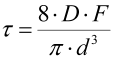
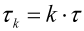

|
|
|


剪切应力值
对于承受静态和准静态应力的弹簧的尺寸设计，剪切应力 τ 按下式计算：
|  | (48.1) |
τ：剪切应力 [N/mm2]
D：平均簧圈直径 [mm]
F：弹簧力 [N]
d：钢丝直径 [mm]
计算承受动态应力的弹簧的剪切应力：
|  | (48.2) |
τk：修正剪切应力 [N/mm2]
τ：剪切应力 [N/mm2]
k：应力修正系数
English Original
Shear stress values
The shear stress τ is calculated for the sizing of springs that are subject to static and quasistatic stress:
| (48.1) |
τ: Shear stress [N/mm2]
D: medium coil diameter [mm]
F: spring force [N]
d: wire diameter [mm]
Calculating shear stress for springs subjected to dynamic stress:
| (48.2) |
τk: corrected shear stress [N/mm2]
τ: shear stress [N/mm2]
k: Stress correction factor